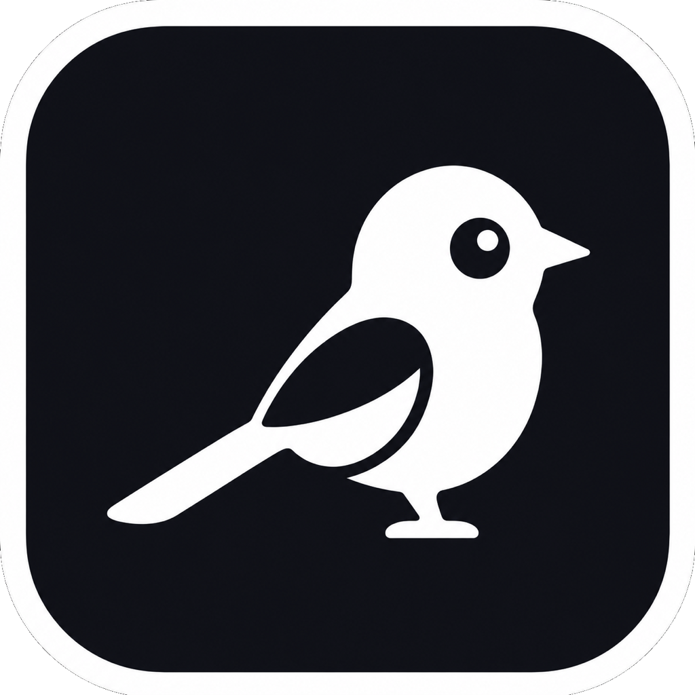

docs.apple.com
docs.apple.com
Read later
나중에 읽기
Design reference
디자인 참고
Search results
검색 결과
Later reading
언젠가 읽을 글
3 tabs tucked away
탭 3개, 나중을 위해 보관
Mac menu-bar app
맥 메뉴 막대 앱
For tabs you were definitely going to close.
분명 닫으려고 했던 탭들을 위해.
You know the shortcut. The tab is still there. Maybe useful later, probably not.
Kkachi tucks stale tabs away and keeps a way back.
단축키는 알고 있습니다. 탭은 아직 거기 있고요. 언젠가 쓸 것 같지만 대개는 그냥 자리만 차지하죠.
Kkachi는 오래 쉰 탭을 조용히 치우고, 다시 열 길은 남겨둡니다.
Less clutter
덜 어수선하게
Stale tabs stop taking space.
묵은 탭이 화면 월세를 그만 냅니다.
Easy undo
되돌리기 쉬움
Recently closed tabs stay local.
최근 정리한 탭은 Mac 안에만 남습니다.
No tab shame
괜찮아요, 탭이 많을 수도 있죠
No ranking, no guilt loop.
판단은 당신이, 정리는 Kkachi가.
Why Kkachi
왜 Kkachi
Why a magpie?
왜 까치일까요?

Kkachi means 까치.
Kkachi는 까치입니다.
In Korea, magpies are tied to good news, cleverness, and coming back. Kkachi borrows that
idea: clear what is idle, keep the return path.
한국에서 까치는 반가운 소식, 영리함, 다시 돌아오는 이미지와 연결됩니다. Kkachi도 그 마음을 빌렸습니다.
멈춰 선 탭은 치우고, 돌아올 길은 남겨둡니다.
Most tabs are not work. They are postponed decisions wearing browser chrome.
탭이 많다는 건 게으르다는 뜻이 아닙니다. 아직 마음의 결재가 안 났다는 뜻이죠.
You might read it later. Sure. Kkachi handles the gap between "leave it" and "never mind"
without making you manage tabs again.
나중에 읽을 수도 있죠. 물론입니다. Kkachi는 "일단 놔두자"와 "아, 됐다" 사이의 그 애매한 시간을
대신 처리합니다.
What it does
하는 일
Watch. Close. Restore.
살피고. 닫고. 다시 열고.
Watch
살핌
Reads the small stuff.
필요한 것만 읽습니다.
Kkachi uses macOS Apple Events for tab title, URL, and whether audio or video is playing.
macOS Apple Events로 탭 제목, URL, 오디오/비디오 재생 여부만 확인합니다.
Prune
정리
Closes stale tabs.
오래 쉰 탭만 닫습니다.
Active, protected, media-playing, ambiguous, or unavailable tabs are skipped instead of guessed.
활성 탭, 보호한 탭, 미디어 재생 중인 탭, 애매하거나 접근할 수 없는 탭은 추측해서 닫지 않습니다.
Restore
복원
Keeps recent tabs local.
최근 탭은 로컬에 보관합니다.
The menu keeps a capped local history for recent pruned tabs and routes restore to the browser.
메뉴에는 최근 정리한 탭 기록이 제한된 개수로 남고, 복원은 원래 브라우저로 돌려보냅니다.
Privacy
개인정보
Only what restore needs.
복원에 필요한 만큼만.
Kkachi stores minimal restore metadata: URL, title, browser identifiers, row/batch IDs, and
time. It checks media playback only to avoid closing a tab that is playing, and sends nothing
about your tabs anywhere.
Kkachi가 저장하는 것은 복원에 필요한 최소 정보입니다. URL, 제목, 브라우저 식별자, 행/묶음 ID,
정리된 시간만 저장합니다. 재생 중인 탭을 닫지 않으려고 미디어 상태만 확인하며, 탭 정보는 어디에도
보내지 않습니다.
Read the privacy details
개인정보 처리 방식 자세히 보기
-
Reads
읽는 것
-
Tab URL, title, and media playback state
탭 URL, 제목, 미디어 재생 상태
-
Stores
저장하는 것
-
Recent restore history on disk
최근 복원 기록을 Mac 안의 로컬 파일에
-
Does not collect
수집하지 않는 것
-
Page content, cookies, forms, DOM text, scroll position
페이지 내용, 쿠키, 입력한 양식, DOM 텍스트, 스크롤 위치
-
Does not send
보내지 않는 것
-
Anything about your tabs off your Mac
탭에 관한 어떤 정보도 Mac 밖으로 보내지 않습니다
Try it
사용해보기
Kkachi is getting ready for the menu bar.
Kkachi는 메뉴 막대에 들어갈 준비 중입니다.
The first public release will ship as a signed, notarized DMG on GitHub Releases. If you
manage Mac apps with Homebrew, this will be the cask command:
첫 공개 릴리즈는 GitHub Releases의 서명 및 공증된 DMG로 배포됩니다. Homebrew로 Mac 앱을 관리한다면
설치 명령은 이렇게 될 예정입니다:
brew install --cask pepsizerosugar/tap/kkachi